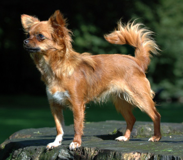

Chihuahua
From Wikipedia: Chihuahua (Dog)
The Chihuahua is the smallest breed of dog, and is named after the Mexican state of Chihuahua. The Chihuahua's history is convoluted, and many theories surround the origin of the breed. Both folklore and archaeological finds show that the breed has origins in Mexico. The most common theory is that Chihuahua is descended from the Techichi, a companion dog favored by the Toltec civilization in Mexico. No records of the Techichi are available before the 9th century, although dog pots from Colima, Mexico, buried as part of the western Mexico shaft tomb tradition, which date back to 300 BC, are thought to depict Techichis.
Amazon parrot
Amazon parrot is the common name for a parrot of the genus Amazona. They are medium-sized parrots native to the New World ranging from South America to Mexico and the Caribbean. Most amazon parrots are predominantly green, with accenting colors that depend on the species and can be quite vivid. They feed primarily on seeds, nuts, and fruits, supplemented by leafy matter. Many amazon parrots have a remarkable ability to mimic human speech and other sounds. Partly because of this, they are popular as pets or companion parrots, and a small industry has developed in breeding parrots in captivity for this market. This popularity has led to many parrots being taken from the wild to the extent that some species have become threatened. The Convention on International Trade in Endangered Species of Wild Fauna and Flora treaty has made the capture of wild parrots for the pet trade illegal in an attempt to help protect wild populations.
Tibetan Mastiff
From Wikipedia: Tibetan Mastiff
The Tibetan Mastiff is a large Tibetan dog breed belonging to the mastiff family. Its double coat is long, subject to climate, and found in a wide variety of colors, including solid black, black and tan, various shades of red (from pale gold to deep red) and bluish-gray (dilute black), often with white markings. The Tibetan Mastiff is considered a primitive breed. It typically retains the hardiness which would be required for it to survive in Tibet and the high-altitude Himalayan range, including the northern part of Nepal, India and Bhutan.